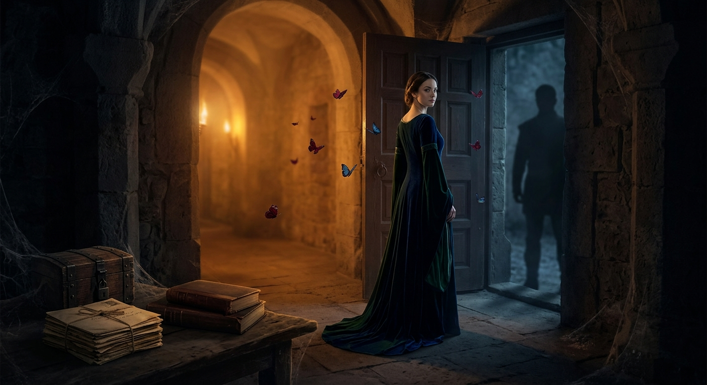

The Secret Chamber
The Secret Chamber is a poem about love that survives silence, memory that refuses to disappear, and the hidden truths we carry within us.
It explores the quiet space between two people who once knew each other, yet left so much unsaid. Beneath the mystery of another person, we sometimes sense a pain they cannot reveal, even when they never allow us close enough to understand it.
The butterfly in this poem represents the delicate self I once allowed the world to see. Beneath its wings lives another woman: the Empress, who has learned that love can be offered without demands, expectations, or conditions.
The secret chamber is the heart itself, a place where unspoken truths can rest safely, untouched by judgment, and held with tenderness.
This poem is an invitation to come without fear, without masks, and without hiding.
🎵 "Memories Romantic Sad Piano Melody" - echoes_of_lumen (Pixabay Music)
